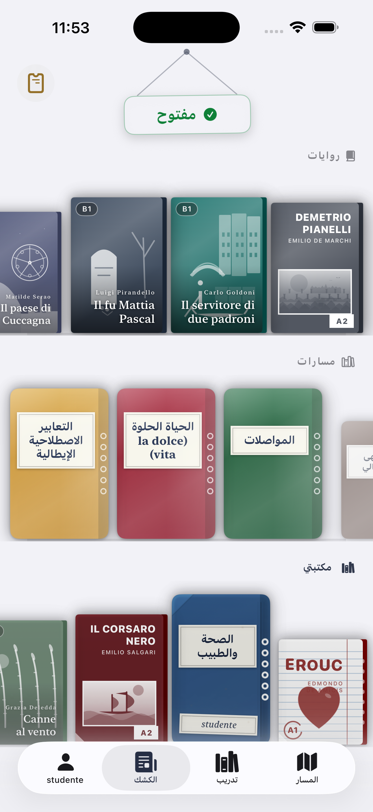
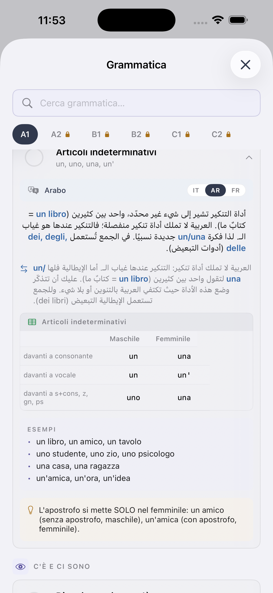
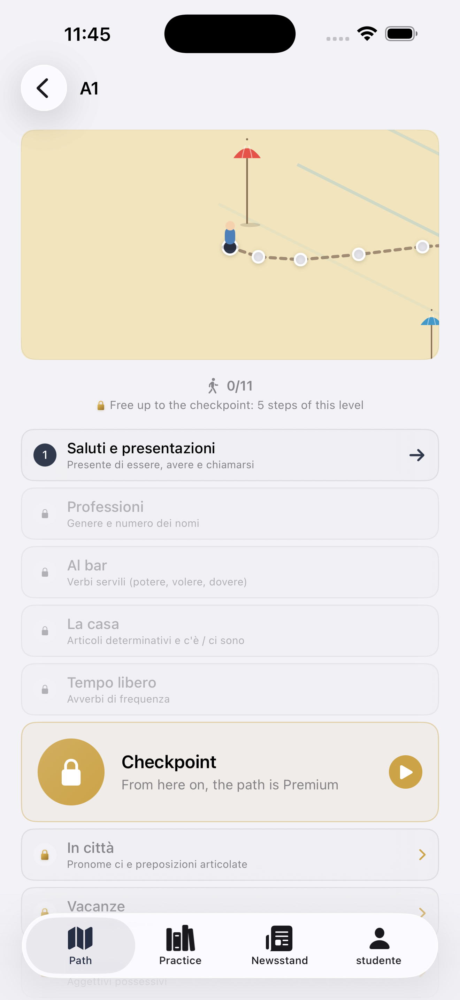
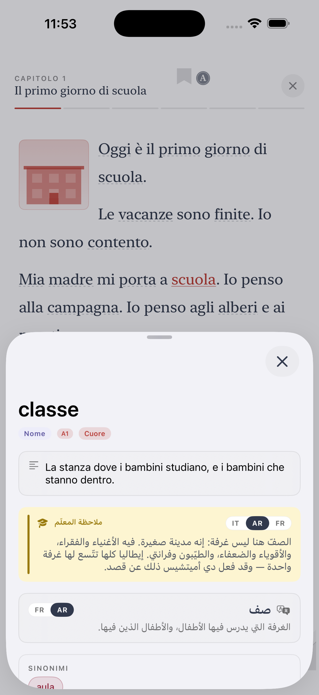
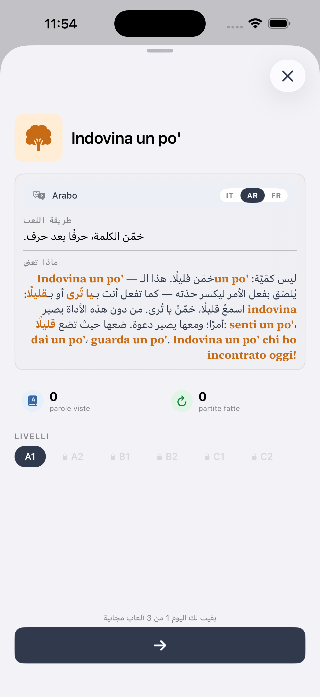

أحبّك، أفهمك، أعلّمك.
تعلّم الإيطالية — من الكلمة الأولى إلى دانتي.
Ti تطبيق iOS للأجانب والمهاجرين الذين يريدون تعلّم الإيطالية الحقيقية — تلك التي تُقال في مكتب البريد، في المقهى، في مقابلة الجنسية. كل شيء مشروح بلغتك.
لماذا Ti مختلف
لقد جرّبت على الأرجح Duolingo. ربما Babbel. هي جيدة — للسياح. Ti مصمم للشخص الذي يعيش (أو ينوي العيش) في إيطاليا.
من معلّم حقيقي
صمّمه أليسّيو، معلم إيطالية بسنوات خبرة في الصف — وليس استوديو ألعاب.
CEFR من اليوم الأول
المستويات الستة نفسها (A1 → C2) المستخدمة في الجامعات، والعمل، واختبار الجنسية.
لغتك أولاً
جميع الشروحات متوفرة بالعربية والإنجليزية والصينية والبنغالية والفلبينية والأوكرانية و 8 أخرى.
ما بداخل Ti
مسار CEFR
ستة مستويات، عشرات المراحل. مفردات وقواعد واستماع وقراءة على خريطة واضحة.
كشك مواضيعي
قراءات حقيقية: ثقافة، طعام، سينما، شؤون راهنة — دائماً بمستواك.
كلاسيكيات متدرّجة
اقرأ بيرانديللو وكالفينو ومانزوني في نسخ تنمو معك.
قاموس بأربع عشرة لغة
أكثر من 3000 كلمة مع ترجمات وأمثلة وصوت لناطق أصلي.
ألعاب وتدريبات
كلمات متقاطعة، مطابقة، إملاء. الأجزاء المملّة أصبحت ممتعة.
صوت لناطق أصلي
كل كلمة وحوار مسجَّل لتسمع الإيطالية الحقيقية.
ستة مستويات، طريق واضح
أينما بدأت، تعرف دائماً ما هو التالي.
البقاء
طلب قهوة، تقديم النفس، أسئلة بسيطة.
التدبّر
معاملات، استمارات، مواعيد. مستوى الجنسية.
الإدارة
العمل والدراسة والحياة الاجتماعية بالإيطالية.
النقاش
الجدل، الشرح، فهم الأخبار والتلفزيون.
الدقّة
تعابير، سجل لغوي، أدب، مواضيع تجريدية.
الإتقان
شبه أصلي. دانتي والعقود واللهجات والنكات.
الأسئلة الشائعة
هل Ti مجاني؟
يمكنك البدء مجاناً. المستويات المتقدمة وبعض الميزات ضمن خطة مدفوعة صغيرة — شهرية أو سنوية أو مدى الحياة.
هل Ti مناسب لاختبار الجنسية الإيطالية؟
نعم. مستوى A2 (CILS) يغطي المفردات والقواعد اللازمة.
هل أحتاج معرفة بعض الإيطالية للبدء؟
لا. ابدأ من A1. كل شيء يُشرح أولاً بالعربية ثم بالإيطالية.
ما اللغات التي يدعمها Ti؟
أربع عشرة: العربية، الإنجليزية، الإسبانية، الفرنسية، الألمانية، البرتغالية، الهولندية، الرومانية، الألبانية، الأوكرانية، الصينية، الفلبينية، البنغالية، التغرينية.
هل هو فقط لمن في إيطاليا؟
لا — يعمل في أي مكان. لكن المحتوى مصمم للحياة الحقيقية في إيطاليا.
See Ti in action
The CEFR path, exercises, edicola and graded Italian classics — from A1 to C2, in 14 languages.






